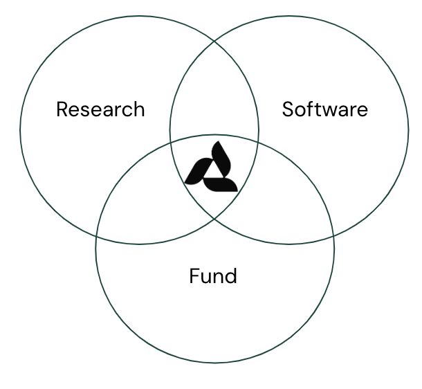
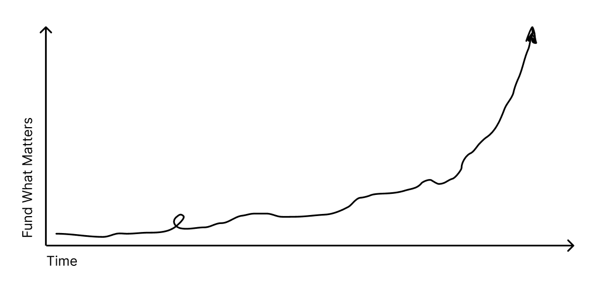
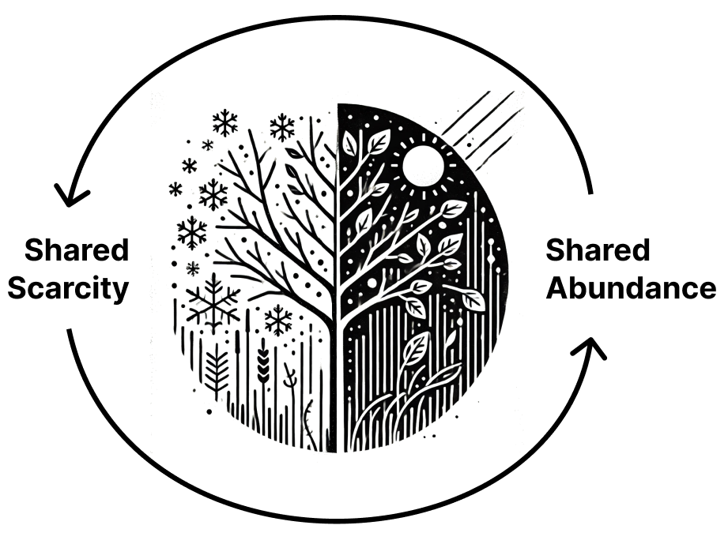
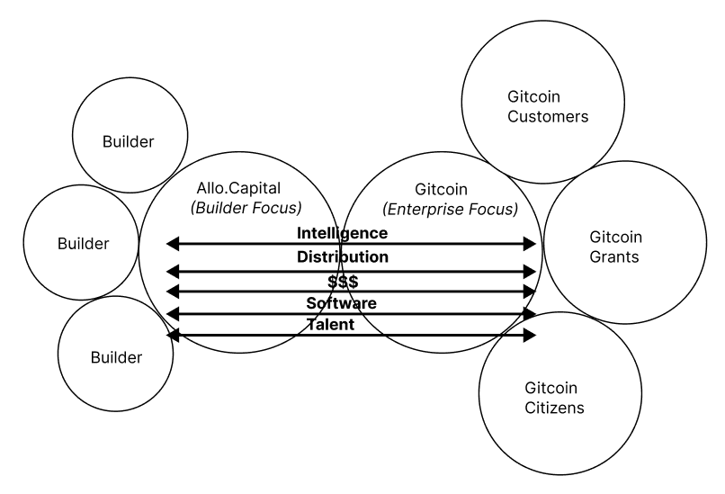
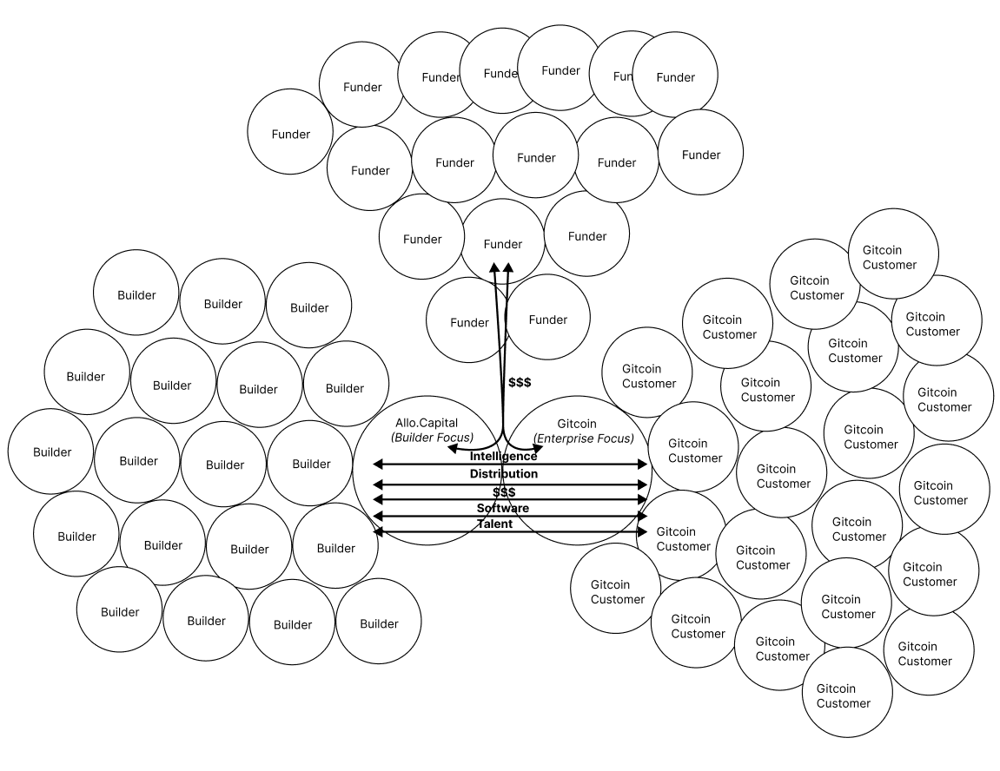

Adventurers wanted for hazardous journey. Low wages, bitter cold, long hours of complete darkness. Safe return doubtful. Honour and recognition in event of success.
Allo.Capital is a hybrid research org, software studio, and venture fund.

We are catalyzing a network of hackers, thinkers, and doers, to help fund what matters in the 21st century.

( made with ❤️ at Gitcoin by Owocki and team )
For Funders: Git Upside in the Best Innovations.
For Builders: Git Funded, Distribution, Education, Acceleration.
For Everyone: Accelerate the Design Space of Onchain Capital Allocation.
Near Term: Summoning Ceremony - Q1(ish) 2025.
Medium Term: Fund Builders of Onchain Capital Allocation Infrastructure.
Long Term: Build the Capital Allocation Layer of the Tokenized Internet.
For builders:
We accelerate builders through funding, distribution, education, and other accelerations.
For funders:
We give funders upside in the best builds.
For everyone:
We cartography the Design Space of Onchain Capital Allocation and ship world-class intelligence about this emerging frontier.
No.
Say hi in the telegram and tag @owocki and @deltajuliet.
Sure, grab some of these memes and LFG.
Find a way to add value. A good place to start is introducing yourself in the telegram.
Yes, there will be many dragons (and other problems) to slay along the way. ⚔️✨🐉
They will include:
- moloch traps & other coordination problems 👹
- technical problems, compilerer errors, making great UXes 🛠️
- social problems, especially finding other great builders and building (3,3) w them..✨
- economic problems, like how do we trojan horse in more public goods funding to the world? 💰
- AI problems, like summoning AI druids to toil for you along the way 🤖
- research problems, which could be across all of the above ♾️
Anything is possible. Nothing is for certain. Crypto is risky and this is the frontier. If you are a sovereign individual with something to contribute and the stomach for a long journey through the next bear market, please DYOR, gear up, and be prepared for the frontier before you party up with us.
If we are successful, honour and recognition will be allocated meritocratically to those who contributed to the success. You can think of our call for "adventurers wanted" as a memetic filter designed to filter out those will not survive the journey through the next long cold bear market. On the plus side, this memetic filter will make sure that those who journey forward are committed to success.

Crypto is a very cyclical industry. It will likely take a couple of cycles before Allo becomes a huge success and can allocate massive abundance to its stakeholers . We believe we have a duty of care to our stakeholders to make sure we only recruit people who can survive in scarcity.
TLDR Yes it's origin is Gitcoin.
Some history: Allo Protocol was incubated at Gitcoin and after much rumination, discussion, and learning is now launching as an independent project called Allo.Capital (if approved by Gitcoin governance). This project will be governed by a decentralized network of funders, builders, and stakeholders - including Gitcoin. @owocki and @deltajuliet are stewarding it through this transition.
We ❤️ Gitcoin, are proud of all it's accomplished in the last few years, and share it's mission to "Fund What Matters". We will continue to be Gitcoin stewards, Gitcoin founders, Gitcoin Grants users, $GTC holders, and work together at the social, technology, and economic layers to build shared momentum across the two projects.
TLDR, to
1. create a new brand that is unencumbered by Gitoin's affiliation with public goods & nonprofit work. Allo's brand is focused on sharp, sophisticated, power tools for capital allocation.
2. create a schelling point where we could focus on manifesting the best capital onchain allocation infrastructure.
3. put Gitcoin on equal footing with other builders in the increasingly crowded space. If Allo continued to be a Gitcoin project, builders would always have to worry about our credible neutrality.
4. provide a complementary approach to Gitcoin's.
5. create a systematic distributed search algorithm for rigorously exploring and building the onchain cpaital.
6. To create a structure native to 2025 that is unencumbered by Gitcoin's structure, created in 2021 (while still doing right by Gitcoin by giving it upside in the new structure).
To learn more about the considerations behind this discussion, read the much rumination, discussion, and learning that preceded this move!
We've taken great care to align these two projects around shared success, and they are design to interoperate by sharing intelligence, distribution, $$$, software and talent.

Over time, we hope to see this network grow into a DAO of DAOs that rises and falls together. A mesh network of coordinating profitable entities to solve the worlds capital allocation problems at scale.

Allo Protocol was focused on a protocol-first go-to-market, whereas Allo.Capital is focused on a Category-first and Network-first go-to-market.
Allo.Capital transcends & includes Allo Protocol in it's approach. Allo.capitals approach includes (1) research (2) software (including protocols) and (3) funding.
No, its about all 8 forms of capital.
Zooming out...
Owocki thinks sharing diff types of capital with one another is the networked expression of a more an interdependent or interconnected humanity...
Maybe one way of expressing what the power of Allo networks is (1) removing intermediaries and (2) aligning individual contributors by (3) making financial capital synergistic with other types of capital.
Eg an NFT artist who gets financial capital in return for their creative capital ...
Or an engineer who gets financial capital for their intellectual capital and so on...
In the old world these exchanges were mediated by middlemen who could capture and extract from them, thereby warping this expression with their monopoly power and profit motive.
In the new world of Allo nets we can disintermediate, remove the middle men, and make the ICS, artists, and engineers the principal sovereigns of the exchange.. and create a more true expression of this shared civilizational interdependence (our shared heart).
A ragtag group of amazing artists, engineers, dreamers, thinkers, that Owocki has met through his web3 journey. If you want specifics, checkout the telegram and github to get a sense of who is working on what.
Allo.Capital is designed to become a broad tent over time, we hope that everyone who is building onchain capital allocation infrastructure will eventually be a part of Allo.Capital - either at the social, economic, or technological layers.
We will have built the capital allocation layer of the tokenized internet. To do that, we'll create a new path for builders of funding infrastructure, created an outward wave of positive impact, and produced a return for those who supported us along the way (esp Gitcoin, its users).